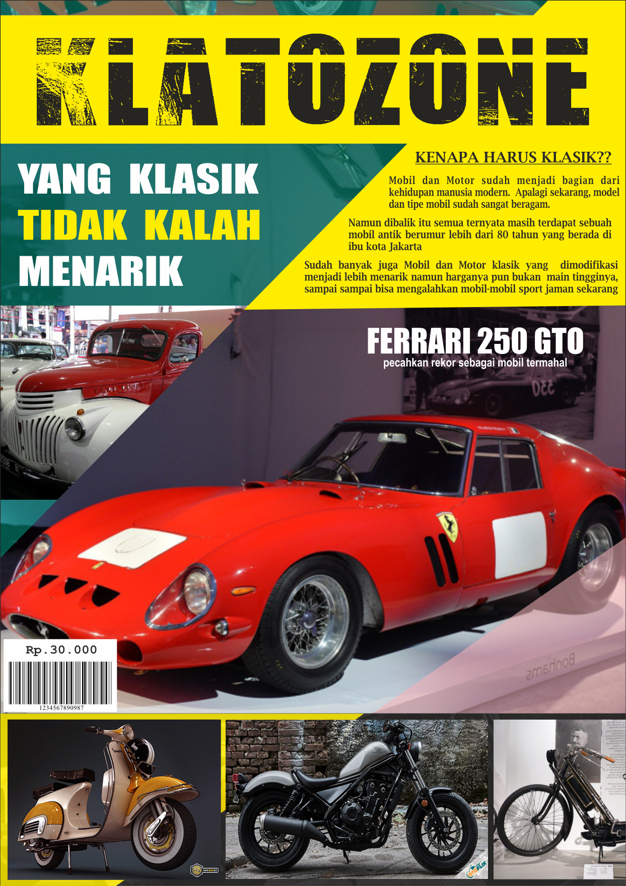
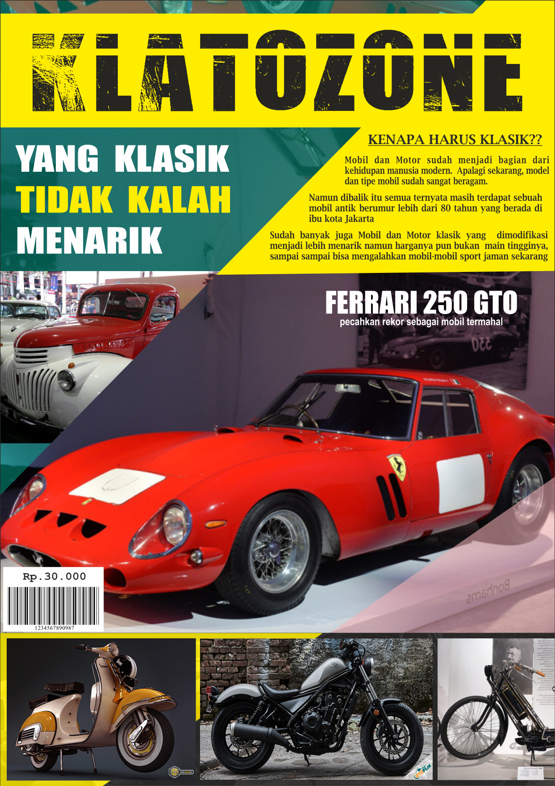
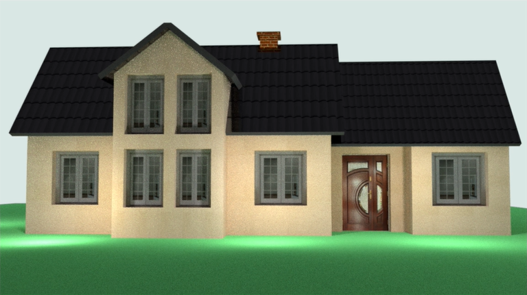
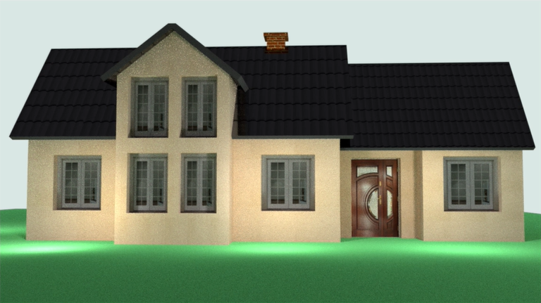

DESAIN GRAFIS
Pengertian Desain Grafis
Desain grafis terdiri dari dua kata, yaitu desain dan grafis. Desain sebagai kata kerja diartikan dengan proses untuk membuat dan menciptakan obyek baru yang berkaitan erat dengan seni untuk mencapai tujuan tertentu. Grafis dapat diartikan sebagai citra visual (image). Istilah grafik sudah dipakai untuk suatu grafis yang menghasilkan informasi data yang dalam bahasa Inggris disebut dengan "chart". Desain grafis adalah bentuk komunikasi visual yang menggunakan gambar untuk menyampaikan informasi atau pesan seefektif mungkin. Seperti jenis desain lain, Desain Grafis dapat merujuk pada proses pembuatan, metode merancang, produk yang dihasilkan. Secara garis besar, desain grafis dibedakan menjadi beberapa kategori, diantaranya yaitu:
1. Percetakan/Printing
Termasuk desain Buku, Majalah, Poster, Banner, Flyer periklanan dan publikasi lain yang sejenis. Berikut tugas dan hasil desain terkait.
 


2. Desain Kemasan Produk, Mok Up Packaging.
Dalam membuat branding dari suatu produk pasti membutuhkan yang namanya packaging/bungkusan, box, dan sejenisnya. Berikut desain yang pernah saya buat terkait hal tersebut.
3. Logo atau identifikasi, EGD (Environmental Graphic Design)
Ialah desain profesional yang mencakup desain industri seperti iklan, branding, dan profil perusahaan. Berikut beberapa Tugas maupun Job Logo yg pernah dibuat.
4. Desain Web dan Desain Multimedia Interaktif (DMI)
Salah satu portofolio yg saya buat adalah website ini sendiri, dan ada beberapa Mok-up dari DMI yg pernah saya buat.
.jpg)
.jpg)
.jpg)
.jpg)
.jpg)
.jpg)
.jpg)
.jpg)
Sumber Artikel : ~ Klik Disini! ~


 
